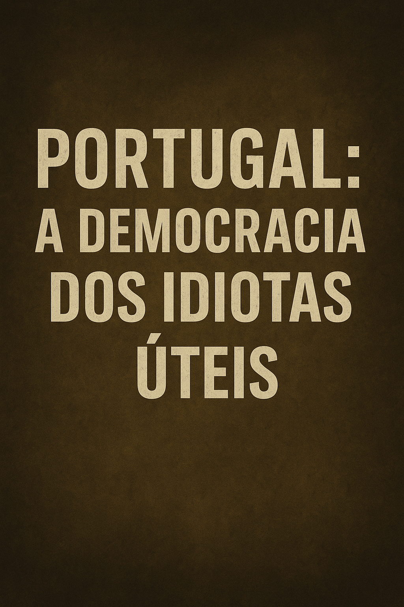

Publicado em 2025-05-09 20:57:58
Por Francisco | Publicado a 09 de May de 2025
“Portugal tornou-se o país onde a mediocridade legisla, a estupidez manda e a cidadania assiste em silêncio.”
A idiotice em Portugal já não é um acaso. É um regime. Multiplica-se nos gabinetes, nos parlamentos, nas câmaras municipais. Fala em nome do povo, mas despreza o povo. Invoca a democracia, mas cultiva a ignorância.
A classe política deixou de ser escolha entre ideias — passou a ser escolha entre incompetentes com bom marketing. Governa-se para a televisão, para os titulares de cargos e para os lobbies. Nunca para os cidadãos.
O mais trágico? O povo já nem se revolta. Já nem se indigna. Observa o desfile dos corruptos, dos cínicos e dos inúteis como se fosse normal. Aceita que o país ande para trás, desde que o futebol continue e o salário chegue para a subsistência. A cidadania morreu. E no seu lugar ficou a servidão voluntária.
Portugal é hoje uma democracia de idiotas úteis. Gente que vota sem ler, que opina sem saber, que aceita tudo desde que não lhe tirem o telemóvel ou o feriado. É duro? Sim. Mas é verdade. E enquanto os lúcidos forem minoria silenciosa, os medíocres continuarão a mandar.
A única saída é acordar. E acordar, neste país, é um ato revolucionário. Porque pensar, hoje, é o verdadeiro crime contra o sistema.